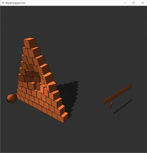

Advanced Collision Detection#
Tuning Shape Collision Behavior#
Dynamic rigid bodies have collision shapes attached to them that are used for contact generation. Contacts influence the bodies’ motion as they are used by the constraint solver to generate impulsive forces at the contact points. Shapes have two parameters that control contact generation: the contactOffset and the restOffset. Collision detection starts to generate contact points as soon as two shapes get closer than the sum of their contact offsets (this sum will be referred to as contactDistance). The contactOffset has to be non-negative, which means that contact generation potentially starts before the shape geometries of two objects penetrate. A shape’s contactOffset also has to be larger than its restOffset. The restOffset quantifies how close a shape gets to others at rest. At rest, the distance between two vertically stacked objects is the sum of their rest offsets (this sum will be referred to as restDistance). If a pair of shapes has a positive restDistance, the shapes will be separated at rest by an air gap. If a pair of shapes has a negative restDistance, the shape geometries will at rest penetrate by that distance.
Use PxShape::setContactOffset() and PxShape::setRestOffset() to set the contact and rest offsets of a shape.
Collision detection is able to generate contact points between two shapes when they are still a distance apart, when they are exactly touching, or when they are inter-penetrating. To make the discussion simpler, we treat interpenetration as a negative distance. So the distance between two shapes can be positive, zero, or negative. contactDistance is the distance at which collision detection will start to generate contacts. It has to be greater than zero, meaning that PhysX will always generate contacts when two shapes are penetrating (unless collision detection between the two shapes is in some way completely disabled, such as with filtering). By default, when using metric units and default scaling in PxTolerancesScale, contactOffset is 0.02, which means contactDistance will work out to 4 centimeters. So when two shapes approach each other within 4 centimeters, contacts will be generated until they are again moved further apart than 4 centimeters.
The generation of contact points does not however mean that a large impulse will immediately be applied at these locations to separate the shapes, or to even prevent further motion in the direction of penetration. This would make the simulation jitter unless the simulation time step is selected to be tiny, which is not desirable for real time performance. Instead, we want the force at the contact to smoothly increase as penetration increases until it reaches a value sufficiently high to stop any further penetrating motion. The distance at which this maximum force is reached is the restDistance, because at this distance two shapes stacked on each other will reach static equilibrium and come to rest. When the shapes are for some reason pushed together so much that they have a distance below restDistance, an even greater force is applied to push them apart until they are at restDistance again. The variation of force applied as the distance changes is not necessarily linear, but it is smooth and continuous which results in a pleasing simulation even at large time steps.
There are a few different things to consider when choosing contactOffset and restOffset for shapes. Typically the same values can be used for all shapes in a simulation. It makes sense to determine restOffset first. The goal is typically to have the graphics shapes appear to stack such that they are exactly touching, like bodies do in real life. If the collision shapes are sized to be the exact same size as the graphics shapes, a restOffset of zero is needed. If the collision shapes are an epsilon bigger than the graphics shapes, a restOffset of negative epsilon is correct. This will let the larger collision shapes sink into each other until the smaller graphics shapes touch too. Rest offsets that are larger than zero are practical for example if there are problems with sliding on triangle geometry where the penetration based contact generation has more trouble producing smooth contact points than a separation one, resulting in a smoother slide.
Once the restOffset is determined, the contactOffset should be chosen to be a value a slightly larger. The rule of thumb is to make the difference between the two as small as possible that still effectively avoids jitter at the time step size the simulation uses. A larger time step will need the difference to be larger. The drawback of setting it too large is that contacts will be generated sooner as two shapes approach, which drives up the total number of contacts that the simulation has to worry about. This will decrease performance. Also, the simulation code often makes the assumption that contact points are close to the convex shapes’ surface. If the contact offset is very large this assumption breaks down which could lead to behavior artefacts.
Contact Modification#
Under certain circumstances, it may be necessary to specialize contact behavior. For example to implement sticky contacts, give objects the appearance of floating or swimming inside each other, or making objects go through apparent holes in walls. A simple approach to achieve such effects is to let the user change the properties of contacts after they have been generated by collision detection, but before the contact solver. Because both of these steps occur within the scene simulate() function, a callback must be used.
The callback occurs for all pairs of colliding shapes for which the user has specified the pair flag PxPairFlag::eMODIFY_CONTACTS in the filter shader.
To listen to these modify callbacks, derive from the class PxContactModifyCallback:
class MyContactModification : public PxContactModifyCallback
{
...
void onContactModify(PxContactModifyPair* const pairs, PxU32 count);
};
And then implement the PxContactModifyCallback::onContactModify() function:
void MyContactModification::onContactModify(PxContactModifyPair* const pairs, PxU32 count)
{
for(PxU32 i=0; i<count; i++)
{
...
}
}
Every pair of shapes comes with an array of contact points, that have a number of properties that can be modified, such as position, contact normal, and separation. See PxModifiableContact and PxContactSet for properties that can be modified.
In addition to modifying contact properties, it is possible to:
Set target velocities for each contact (see
PxContactSet::setTargetVelocity())Limit the maximum impulse applied at each contact (see
PxContactSet::setMaxImpulse())Adjust inverse mass and inverse inertia scales separately for each body (see
PxContactSet::setInvMassScale0(),PxContactSet::setInvMassScale1(),PxContactSet::setInvInertiaScale0(),PxContactSet::setInvInertiaScale1())
Conveyor belt-like effects can be achieved by setting target velocities. Best results are achieved by having target velocities running in tangential directions to the contact normal but the solver does also support target velocities in the direction of the contact normal.
Note that there are no guarantees about the ordering of contact pairs or the actor/shape order within a pair.
Therefore, when applying contact modification to a specific shape or actor, the callback code must check both:
1) whether a given pair actually contains the shape/actor;
and 2) what the shape/actor ordering is within the pair, since this order specifies the target-velocity frame convention.
See the API docs of PxContactSet::setTargetVelocity() for full details.
The user can limit the impulse applied at each contact by limiting the maximum impulse applied at each contact. This can be useful to produce “soft” contact effects, e.g. to give the impression of energy dissipation due to compression or to limit the impulse applied on a dynamic body due to a kinematic collision. Note that limiting the maximum impulse can potentially lead to additional penetration and bodies passing through each-other.
Adjusting mass and inertia scales can be used to tune how contacts between a pair of bodies affect the bodies’ linear and angular velocities respectively. Each body in the contact pair has a separate inverse mass and inverse inertia scale. These scales are initialized to 1 and can be adjusted as part of the callback. Note that these values perform local mass modification within the contact pair and affect all contacts within the pair.
Uniformly scaling a body’s inverse mass and inverse inertia by the same value results in the body behaving like a body that is either heavier or lighter depending on the values used. Providing inverse mass/inverse inertia scales < 1 results in the body appearing heavier; providing scales > 1 result in the body appearing lighter. For example, inverse mass/inertia scales of 0.5 result in the body appearing to have double the mass. Providing inverse mass/inertia scales of 4 would result in the body appearing to have a quarter of its original mass. Providing inverse mass/inertia scale of 0 results in the body behaving as if it has infinite mass.
However, it is also possible to non-uniform scale a body’s inverse mass and inverse inertia by providing different values to a body’s inverse mass and inverse inertia scale. For example, it is possible to reduce or increase the amount of angular velocity change as a result of contacts by adjusting just the inverse inertia scale. The use-cases for this kind of modification are extremely application-dependent but may involve, for example, tuning interactions between a player’s vehicle and traffic vehicles in an arcade-style driving game, where the player’s car is expected to be bumped by traffic vehicles but where it would be extremely frustrating to the player if the car was to spin-out as a result of the collision. This could also be achieved by making the traffic vehicles much lighter than the player’s vehicle but this may make the traffic vehicles appear “too light” and therefore damage the player’s immersion.
When performing local mass modification, the impulse reported in PxSimulationEventCallback::onContact() will be relative to the locally scaled masses of the bodies involved in that contact. Therefore, this reported impulse may no longer accurately reflect the change in momentum caused by a given contact. In order to resolve this issue, we have provided the following methods in the rigid body extensions to extract the linear and angular impulse and velocity change caused by a contact using local mass modification:
static void computeLinearAngularImpulse(const PxRigidBody& body, const PxTransform& globalPose,
const PxVec3& point, const PxVec3& impulse, const PxReal invMassScale,
const PxReal invInertiaScale, PxVec3& linearImpulse, PxVec3& angularImpulse);
static void computeVelocityDeltaFromImpulse(const PxRigidBody& body,
const PxTransform& globalPose, const PxVec3& point, const PxVec3& impulse,
const PxReal invMassScale, const PxReal invInertiaScale, PxVec3& deltaLinearVelocity,
PxVec3& deltaAngularVelocity);
These methods return separate linear and angular impulse and velocity change values to reflect the fact that the mass and inertia may have been non-uniformly scaled. When local mass modification has been used, it may be necessary to extract separate linear and angular impulses for each contact point, for each body in the pair. Please note that these helper functions are intended to provide users with accurate impulse values and are by no means mandatory. For simple use-cases, e.g. triggering effects or damage based on impulse thresholds, the single impulse value reported by the contact report should be perfectly acceptable even when local mass modification has been used. However, if local mass modification has been used and the impulse values are being used for more complex behaviors, e.g. balance control for a ragdoll, then these helper functions will most-likely be required to achieve correct behavior. Please note that, in the case of articulations, computeLinearAngularImpulse will return the correct impulse applied on respective articulation link. However, computeVelocityDeltaFromImpulse will not return the correct velocity changes for an articulation link because it does not take the effect of any other links of the articulation into account.
- In addition, the following considerations must be made when using local mass modification:
Force thresholding for callbacks will be based on the scalar impulse value in contact reports. This was calculated using the scaled mass/inertias of the bodies so using mass scaling may require these thresholds to be re-tuned.
Maximum impulse clamping occurs in the solver on an impulse value operating on the scaled masses/inertias. As a result, the magnitude of applied impulses calculated from computeLinearAngularImpulse(…) may exceed the maxImpulse in situations where mass scaling was used. In situations where uniform mass scaling was used, the magnitude of the magnitude of linear impulse will not exceed massScale * maxImpulse and angular impulse will not exceed inertiaScale * maxImpulse.
There are a couple of special requirements for the callback due to the fact that it is coming from deep inside the SDK. In particular, the callback should be thread safe and reentrant. In other words, the SDK may call onContactModify() from any thread and it may be called concurrently (i.e., asked to process sets of contact modification pairs simultaneously).
The contact modification callback can be set using PxSceneDesc::contactModifyCallback or PxScene::setContactModifyCallback().
Contact reporting#
Here is an example for a contact event function, from SnippetContactReport:
class ContactReportCallback : public PxSimulationEventCallback
{
...
void onContact(const PxContactPairHeader& pairHeader, const PxContactPair* pairs, PxU32 nbPairs)
{
PX_UNUSED((pairHeader));
std::vector<PxContactPairPoint> contactPoints;
for(PxU32 i=0;i<nbPairs;i++)
{
PxU32 contactCount = pairs[i].contactCount;
if(contactCount)
{
contactPoints.resize(contactCount);
pairs[i].extractContacts(&contactPoints[0], contactCount);
for(PxU32 j=0;j<contactCount;j++)
{
gContactPositions.push_back(contactPoints[j].position);
gContactImpulses.push_back(contactPoints[j].impulse);
}
}
}
}
};
ContactReportCallback is a subclass of PxSimulationEventCallback. PxSimulationEventCallback::onContact() receives the pair for which the requested contact events (like e.g. PxPairFlag::eNOTIFY_TOUCH_FOUND) have been triggered.
Note
By default collisions between kinematic rigid bodies and kinematic and static rigid bodies will not get reported. To enable these reports use the PxSceneDesc::kineKineFilteringMode and PxSceneDesc::staticKineFilteringMode parameters when creating a scene.
Frequently, users are only interested in contact reports if the force of impact is larger than a certain threshold. This allows to reduce the amount of reported pairs which need to get processed. To take advantage of this option the following additional configurations are necessary:
Use
PxPairFlag::eNOTIFY_THRESHOLD_FORCE_FOUND,PxPairFlag::eNOTIFY_THRESHOLD_FORCE_PERSISTS,PxPairFlag::eNOTIFY_THRESHOLD_FORCE_LOSTinstead ofPxPairFlag::eNOTIFY_TOUCH_FOUNDetc.Specify the threshold force for a dynamic rigid body through
PxRigidDynamic::setContactReportThreshold(). If the body collides with an other object and the contact force is above the threshold, a report will get sent (if enabled according to thePxPairFlagsetting of the pair). If two colliding dynamic bodies both have a force threshold specified then the lower threshold will be used.
Note
If a dynamic rigid body collides with multiple static objects, then the impact force of all those contacts will get summed up and used to compare against the force threshold. In other words, even if the impact force against each individual static object is below the threshold, the contact reports will still get sent for each pair if the sum of those forces exceeds the threshold.
Force threshold contact reports only work with PGS solver and only when simulating on CPU.
Contact Reports and CCD#
If continuous collision detection (CCD) with multiple passes is enabled, then a fast moving object might bounce on and off the same object multiple times during a single simulation step. By default, only the first impact will get reported as a PxPairFlag::eNOTIFY_TOUCH_FOUND event in this case. To get events for the other impacts too, the PxPairFlag::eNOTIFY_TOUCH_CCD has to be raised for the collision pair. This will trigger PxPairFlag::eNOTIFY_TOUCH_CCD events for the non primary impacts. For performance reasons, the system can not always tell whether the contact pair lost touch in one of the previous CCD passes and thus can also not always tell whether the contact is new or has persisted. PxPairFlag::eNOTIFY_TOUCH_CCD just reports when the two collision objects were detected as being in contact during a CCD pass.
Extracting Contact Information#
The onContact simulation event permits read-only access to all contact points for a given PxContactPair. In previous releases, these were available as a flattened array of PxContactPoint objects. However, PhysX 3.3 introduced a new format for this data: the compressed contact stream. The contact information is now compressed into an appropriate format for a given PxContactPair depending on certain properties, e.g. depending on the shapes involved, the properties of the contacts, materials and whether the contacts are modifiable.
As there are a large number of combinations of different formats, the user is provided with two built-in mechanisms to access the contact data. The first approach provides a mechanism to extract contacts from a user buffer and can be used as below:
void MySimulationCallback::onContact(const PxContactPairHeader& pairHeader, const PxContactPair* pairs, PxU32 nbPairs)
{
const PxU32 bufferSize = 64;
PxContactPairPoint contacts[bufferSize];
for(PxU32 i=0; i < nbPairs; i++)
{
const PxContactPair& cp = pairs[i];
PxU32 nbContacts = cp.extractContacts(contacts, bufferSize);
for(PxU32 j=0; j < nbContacts; j++)
{
PxVec3 point = contacts[j].position;
PxVec3 impulse = contacts[j].impulse;
PxU32 internalFaceIndex0 = contacts[j].internalFaceIndex0;
PxU32 internalFaceIndex1 = contacts[j].internalFaceIndex1;
//...
}
}
}
This approach requires copying data to a temporary buffer in order to access it. The second approach allows the user to iterate over the contact information without extracting their own copy:
void MySimulationCallback::onContact(const PxContactPairHeader& pairHeader, const PxContactPair* pairs, PxU32 nbPairs)
{
for(PxU32 i=0; i < nbPairs; i++)
{
const PxContactPair& cp = pairs[i];
PxContactStreamIterator iter(cp.contactPatches, cp.contactPoints, cp.getInternalFaceIndices(), cp.patchCount, cp.contactCount);
const PxReal* impulses = cp.contactImpulses;
PxU32 flippedContacts = (cp.flags & PxContactPairFlag::eINTERNAL_CONTACTS_ARE_FLIPPED);
PxU32 hasImpulses = (cp.flags & PxContactPairFlag::eINTERNAL_HAS_IMPULSES);
PxU32 nbContacts = 0;
while(iter.hasNextPatch())
{
iter.nextPatch();
while(iter.hasNextContact())
{
iter.nextContact();
PxVec3 point = iter.getContactPoint();
PxVec3 impulse = hasImpulses ? dst.normal * impulses[nbContacts] : PxVec3(0.f);
PxU32 internalFaceIndex0 = flippedContacts ?
iter.getFaceIndex1() : iter.getFaceIndex0();
PxU32 internalFaceIndex1 = flippedContacts ?
iter.getFaceIndex0() : iter.getFaceIndex1();
//...
nbContacts++;
}
}
}
}
This approach is slightly more involved because it requires the user to not only iterate over all of the data but also consider conditions like whether the pair has been flipped or whether impulses have been reported with the pair. However, this approach of iterating over the data in-place may be more efficient because it does not require copying data.
Contact Friction Information#
In addition to contact points, PxContactPair may also report friction anchors - points to which the solver applies friction impulses. Each anchor has a position and an impulse. Similar to contact points, this information can be accessed in two ways:
Option 1: Copying to a temporary buffer:
void MySimulationCallback::onContact(const PxContactPairHeader& pairHeader, const PxContactPair* pairs, PxU32 nbPairs)
{
const PxU32 bufferSize = 64;
PxContactPairFrictionAnchor anchors[bufferSize];
for(PxU32 i=0; i < nbPairs; i++)
{
const PxContactPair& cp = pairs[i];
PxU32 nbAnchors = cp.extractFrictionAnchors(anchors, bufferSize);
for(PxU32 j=0; j < nbAnchors; j++)
{
PxVec3 position = anchors[j].position;
PxVec3 impulse = anchors[j].impulse;
//...
}
}
}
Option 2: Using the friction anchor iterator:
void MySimulationCallback::onContact(const PxContactPairHeader& pairHeader, const PxContactPair* pairs, PxU32 nbPairs)
{
for(PxU32 i=0; i < nbPairs; i++)
{
const PxContactPair& cp = pairs[i];
PxFrictionAnchorStreamIterator iter(cp.contactPatches, cp.frictionPatches, cp.patchCount);
while(iter.hasNextPatch())
{
iter.nextPatch();
while(iter.hasNextFrictionAnchor())
{
iter.nextFrictionAnchor();
PxVec3 point = iter.getPosition();
PxVec3 impulse = iter.getImpulse();
//...
}
}
}
}
Note
Friction information is only available in PxFrictionType::ePATCH friction mode.
Extra Contact Data#
Since pointers to the actors of a contact pair are provided in contact reports, actor properties can be read directly within the callback. However, the pose and the velocity of an actor usually refer to the time of impact. If for some reasons the velocity after collision response is of interest, then the actor can not provide that information. Similarly, it is not possible to get the actor velocity or the pose at impact if those properties were changed by the user while the simulation was running (in such a case the newly set property values will be returned). Last but not least, if CCD with multiple passes is enabled, then a fast moving object might bounce on and off the same object multiple times. The object poses and velocities for each such impact can not get extracted from the actor pointers in the callback. For these scenarios, the PhysX SDK provides an additional contact stream that can hold all sorts of extra information related to the contact pair. This extra information is requested per pair through the pair flags PxPairFlags (see the API documentation of PxPairFlag::ePRE_SOLVER_VELOCITY, PxPairFlag::ePOST_SOLVER_VELOCITY, PxPairFlag::eCONTACT_EVENT_POSE for details). If requested, the extra data stream will be available as a member of the PxContactPairHeader structure. The stream can then be parsed by using the predefined iterator PxContactPairExtraDataIterator or by some custom parsing code (see the implementation of PxContactPairExtraDataIterator for details about the format of the stream).
Example code:
void MySimulationCallback::onContact(const PxContactPairHeader& pairHeader,
const PxContactPair* pairs, PxU32 nbPairs)
{
PxContactPairExtraDataIterator iter(pairHeader.extraDataStream,
pairHeader.extraDataStreamSize);
while(iter.nextItemSet())
{
if (iter.postSolverVelocity)
{
PxVec3 linearVelocityActor0 = iter.postSolverVelocity->linearVelocity[0];
PxVec3 linearVelocityActor1 = iter.postSolverVelocity->linearVelocity[1];
...
}
}
}
Another example can be found in SnippetContactReportCCD.
Continuous Collision Detection#
When continuous collision detection (CCD) is turned on, the affected rigid bodies will not go through other objects at high velocities (a problem also known as tunnelling). To enable CCD, three things need to happen:
CCD needs to be turned on at scene level:
PxPhysics* physx; ... PxSceneDesc desc; desc.flags |= PxSceneFlag::eENABLE_CCD; ...
Pairwise CCD needs to be enabled in the pair filter:
static PxFilterFlags filterShader( PxFilterObjectAttributes attributes0, PxFilterData filterData0, PxFilterObjectAttributes attributes1, PxFilterData filterData1, PxPairFlags& pairFlags, const void* constantBlock, PxU32 constantBlockSize) { pairFlags = PxPairFlag::eSOLVE_CONTACT; pairFlags |= PxPairFlag::eDETECT_DISCRETE_CONTACT; pairFlags |= PxPairFlag::eDETECT_CCD_CONTACT; return PxFilterFlags(); } ... desc.filterShader = testCCDFilterShader; physx->createScene(desc);
CCD need to be enabled for each PxRigidBody that requires CCD:
PxRigidBody* body; ... body->setRigidBodyFlag(PxRigidBodyFlag::eENABLE_CCD, true);
Once enabled, CCD only activates between shapes whose relative speeds are above the sum of their respective CCD velocity thresholds. These velocity thresholds are automatically calculated based on the shape’s properties and support non-uniform scales.
Contact Notification and Modification#
CCD supports the full set of contact notification events that are supported with the discrete collision detection. For details on contact notification, see the documentation for Callbacks.
CCD supports contact modification. To listen to these modify callbacks, derive from the class PxCCDContactModifyCallback:
class MyCCDContactModification : public PxCCDContactModifyCallback
{
...
void onCCDContactModify(PxContactModifyPair* const pairs, PxU32 count);
};
And then implement the PxContactModifyCallback::onContactModify() function:
void MyContactModification::onContactModify(PxContactModifyPair* const pairs, PxU32 count)
{
for(PxU32 i=0; i<count; i++)
{
...
}
}
This onContactModify callback operates using the same semantics as the discrete collision detection contact modification callbacks. For further details, please refer to the documentation on Callbacks.
As with discrete collision detection, CCD will only emit contact modification events for a given pair if the user has specified the pair flag PxPairFlag::eMODIFY_CONTACTS in the filter shader.
Triggers#
Currently, shapes flagged with PxShapeFlag::eTRIGGER_SHAPE will not be included in CCD. However, it is possible to get trigger events from CCD by not flagging trigger shapes as PxShapeFlag::eTRIGGER_SHAPE and instead configuring the filter shaders to return the following state for pairs involving trigger shapes:
pairFlags = PxPairFlag::eTRIGGER_DEFAULT | PxPairFlag::eDETECT_CCD_CONTACT;
return PxFilterFlag::eDEFAULT;
SnippetTriggers illustrates the use of built-in triggers, and how to emulate them with regular shapes if you need CCD or trigger-trigger notifications.
Tuning CCD#
The CCD should generally work without any tuning. However, there are 4 properties that can be adjusted:
PxSceneDesc::ccdMaxPasses: this variable controls the number of CCD passes performed by PhysX. This is defaulted to 1, meaning that all objects are attempted to be updated to the time of impact (TOI) of their first contact. Any remaining time after the TOI of their first contact will be dropped. Increasing this value permits the CCD to run multiple passes. This reduces the likelihood of time being dropped but can increase the cost of the CCD.PxRigidBody::setMinCCDAdvanceCoefficient(): this method allows you to adjust the amount by which the CCD advances objects in a given pass. By default, this value is 0.15, meaning that CCD will advance an object by the 0.15 * ccdThreshold, where ccdThreshold is a value computed per-shape that acts as a lower-bound of the maximum amount of time that could be consumed before there is a chance that the object could have tunnelled. The default value of 0.15 improves the fluidity of motion without risking missed collisions. Reducing this value can negatively impact fluidity but will reduce the likelihood of objects clipping at the end of a frame. Increasing this value may increase the likelihood of objects tunnelling. This value should only be set in the range [0,1].PxSceneFlag::eDISABLE_CCD_RESWEEP: enabling this flag disables CCD resweeps. This can result in missed collisions as the result of ricochets but has the potential to reduce the overhead of the CCD. In general, enabling this advancement mode still guarantees that objects will not pass through the static environment but no longer guarantees that dynamic objects with CCD enabled will not pass through each-other.PxRigidBodyFlag::eENABLE_CCD_FRICTION: enabling this flag enables the application of friction forces in the CCD. This is disabled by default. As the CCD operates using only linear motion, enabling friction inside CCD can cause visual artefacts.
Performance Implications#
Enabling CCD on a scene/all bodies in a scene should be relatively efficient but it will have some performance impact even when all the objects in the scene are moving relatively slowly. A great deal of effort has been put into optimizing the CCD and as a result, this additional overhead should only constitute a very small portion of the overall simulation time when the objects are moving slowly. As the objects’ velocities increase, the CCD overhead will increase, especially if there are a lot of high-speed objects in close proximity. Increasing the number of CCD passes can make the CCD more expensive although the CCD will terminate early if the additional passes are not required.
Limitations#
The CCD system is a best-effort conservative advancement scheme. It runs a finite number of CCD substeps (defaulted to 1) and drops any remaining time. Usually, time is only dropped on high-speed objects at the moment of impact so it is not noticeable. However, this artefact can become noticeable if you simulate an object that is sufficiently small/thin relative to the simulation time-step that the object could tunnel if it was accelerated by gravity from rest for 1 frame, i.e. a paper-thin rigid body. Such an object would always be moving at above its CCD velocity threshold and could result in a large proportion of simulation time being dropped for that object and any objects in the same island as it (any objects whose bounds overlap the bounds of that object). This could cause a noticeable slow-down/stuttering effect caused by the objects in that island becoming noticeably out-of-sync with the rest of the simulation. It is therefore recommended that paper-thin/tiny objects should be avoided if possible.
It is also recommended that you filter away CCD interactions between bodies that are constrained together, e.g. limbs in the same ragdoll. Allowing CCD interactions between limbs of the same ragdoll could increase the cost of CCD and also potentially cause time to be dropped unnecessarily. CCD interactions are automatically disabled between links in an articulation.
Speculative CCD#
In addition to the above sweep-based CCD, PhysX also provides a cheaper but less robust approach called speculative CCD. This approach functions differently to the sweep-based CCD in that it operates entirely as part of the discrete simulation by inflating contact offsets based on object motion and depending on the constraint solver to ensure that objects do not tunnel through each-other. Contrary to the sweep-based CCD, speculative CCD can catch missed contacts generated by fast angular motions. This is why the sweep-based CCD is sometimes called linear CCD, and speculative CCD is sometimes called angular CCD.
This approach generally works well and, unlike the sweep-based CCD, it is legal to enable speculative CCD on kinematic actors. However, there are cases where it can fail to ensure objects do not pass through each-other. As an example, if the constraint solver accelerates an actor (as a result of a collision or joint) such that the actor passes entirely through objects during that time-step, speculative CCD can result in tunneling.
To enable this feature, raise PxRigidBodyFlag::eENABLE_SPECULATIVE_CCD on the rigid body that requires CCD:
PxRigidBody* body;
...
body->setRigidBodyFlag(PxRigidBodyFlag::eENABLE_SPECULATIVE_CCD, true);
Unlike the sweep-based CCD, this form of CCD does not require settings to be raised on either the scene or on the pair in the filter shader.
Note that this approach works best with PCM collision detection. It may not function as well if the legacy SAT-based collision detection approach is used.
Since PhysX 5 it is legal to enable both sweep-based CCD and speculative CCD at the same time on a given rigid body. This often results in a best-of-both-worlds behavior, enabling both linear and angular CCD on objects.
Raycast CCD#
The PhysX SDK supports an alternative CCD implementation based on simple raycasts. This “raycast CCD” algorithm is available in PhysX Extensions. Contrary to the built-in CCD algorithm implemented within the PhysX SDK, this cheaper and simpler alternative version is fully implemented outside of the SDK itself.
After the traditional simulate/fetchResults calls, the system performs raycasts from the shapes’ center positions to double-check that they did not tunnel. If tunnelling is detected for an object, it is moved back to a previous position along the ray, in an overlap position. Then next frame, the SDK’s contact generation takes over and generates a convincing motion. There are some subtle details not described here, but this is how it works in a nutshell.
Since it is raycast-based, the solution is not perfect. In particular, small dynamic objects can still go through the static world if the ray goes through a crack between edges, or a small hole in the world (like the keyhole from a door). Also, dynamic-vs-dynamic CCD is very approximate. It only works well for fast-moving dynamic objects colliding against slow-moving dynamic objects. Other known limitations are that it is currently only implemented for PxRigidDynamic objects (not for PxArticulationLink), and for simple actors with one shape (not for “compounds”).
However the implementation should be able to prevent important objects from leaving the world, provided the world is watertight. The code is very small, easy to follow or modify, and its performance is often better overall than for the built-in CCD. So it can be a valuable alternative if the default CCD becomes too expensive. As it stands now though, the code is only an example of how to write such an alternative, not a production-ready system.
CCD snippet#
The different CCD methods are all demonstrated in SnippetCCD.
Persistent Contact Manifold (PCM)#
The PhysX SDK provides two types of collision detection:
Legacy collision detection
The legacy collision detection system uses a mixture of SAT (Separating Axis Theorem) and distance-based collision detection to generate full contact manifolds. It generates all the potential contacts in one frame, so it lends itself better to stable stacking. This approach is stable for small contact offsets and rest offsets but may not generate the correct contact points when large offsets are used because it approximates the contact points in these situations by plane shifting.
Persistent Contact Manifold (PCM)
PCM is a fully distance-based collision detection system. PCM generates a full manifold of contacts when two shapes first come into contact. It recycles and updates the existing contacts from the previous frame in the manifold and then it generates a new contact in the subsequent frame if the shapes move relative to each-other more than a threshold amount or if a contact was dropped from the manifold. If too many contacts are dropped from the manifold due to a large amount of relative motion in a frame, then full manifold generation is re-run. This approach is quite efficient in terms of performance and memory. However, because PCM potentially generates fewer contacts than the default collision detection, it might reduce stacking stability when simulating tall stacks with insufficient solver iterations. As this approach is distance-based, it will generate the correct contact points for arbitrary contact offsets/rest offsets.
PCM is now the default collision detection method in PhysX. It can be enabled or disabled using PxSceneFlag::eENABLE_PCM:
PxSceneDesc sceneDesc;
sceneDesc.flags |= PxSceneFlag::eENABLE_PCM;